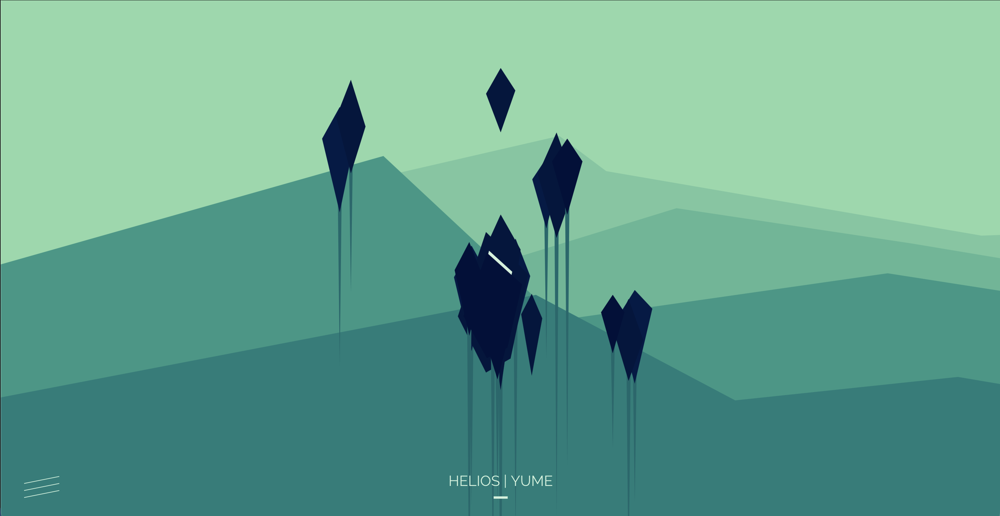
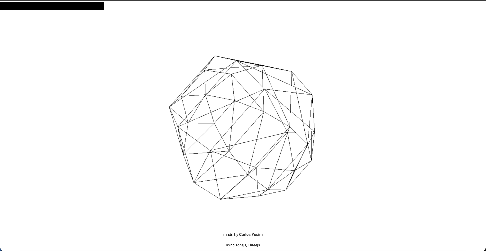

My project for Assignment 2 is an interactive music piece. I have responded to the prompt, 'Novel Input', by allowing a user interacting with various abstract 3D shapes, such as pillars, diamonds and spheres, to control aspects of a music track's mix, such as levels and effects like reverb. This encourages the user to engage in play, resulting in a fun and experimental experience, and immersing them into the music piece. The advanced JavaScript Technique I have used is 'math.random()'. I have implemented this by having the snare drum sample change randomly whenever the user reloads the page.
Inspiration:
 Helios by YumeThe project is mainly inspired by the interactive music piece, Helios by Yume. By dragging diamond shapes around different 3D environments, the user is able to change aspects of the music, such as changing the levels of different instruments, or playing instruments by moving the shapes around. I also was inspired by the characterisation, the abstract shapes encourage experimentation and play and the vivid colours create a moody environment to backdrop the piece. I'm using the idea of interactive shapes and moody, playful characterisation in my piece.
 Holdspace by Carlos YusimI am also inspired by Holdspace by Carlos Yusim. This interactive music piece uses minimal mapping, with the novel input of holding/releasing the spacebar to switch between two different music pieces and animations. The characterisation reinforces the mood of the piece, with a traditionally 'hi-tech' looking wireframe animation reflecting the electronic instrumentation of the music. While my piece is quite different, I am using interactions to immerse the viewer in the piece in my project.